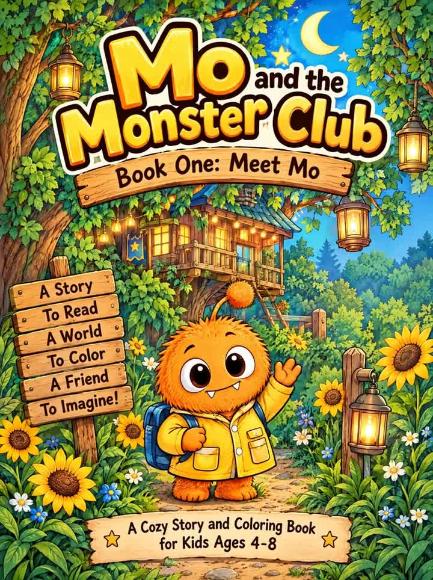
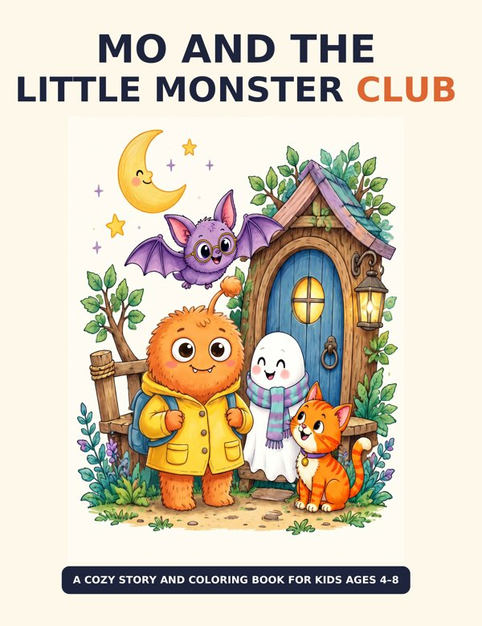

Book One
Mo and the Monster Club: Book One — Meet Mo
The very first adventure. Say hello to Mo, the fuzzy orange monster with a pom-pom antenna and the biggest hugs around.
Order Book One on Amazon →Two books, one fuzzy orange hero. Meet Mo, then join the whole club for stories, coloring, and games.
Start with Book One, then keep the fun going with the Little Monster Club.

The very first adventure. Say hello to Mo, the fuzzy orange monster with a pom-pom antenna and the biggest hugs around.
Order Book One on Amazon →
A read-along story with Mo, Kai, Ari, and Juno, plus 12 coloring pages and a spot-the-changes game. 8.5 × 11 paperback.
Order on Amazon →Four best friends who build blanket forts, float on ponds, deliver letters, and always end the day with hugs.
Orange, fuzzy, and full of big hugs. Mo is the heart of the club.
Purrs "Meow!", chases butterflies, and loves a good storybook.
Flaps her wings, rides her bike, and delivers letters to everyone.
Floats in with a smile and is always ready to build a fort.
Three ways to play in one book. Kids enjoy the story; grown-ups will love spotting the little details.
Short, rhythmic pages perfect for bedtime or early readers sounding out words.
Big, bold illustrations of the club's adventures, ready for crayons and markers.
Track how the friends change through the story and write down what you find.
Grab both books for little readers, birthdays, road trips, and rainy days.